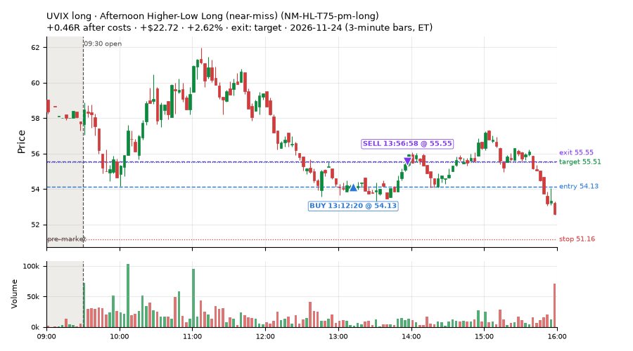
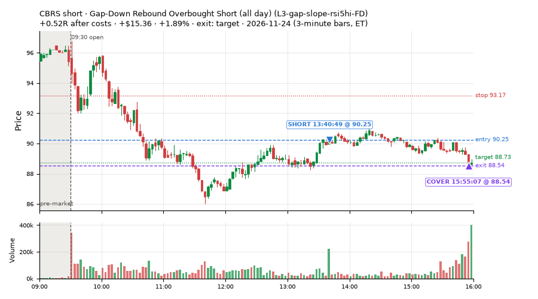
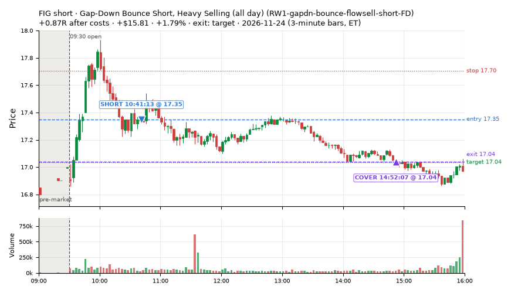
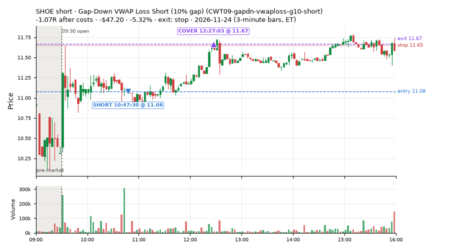
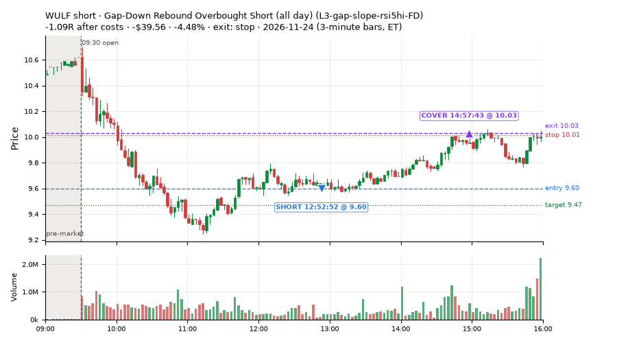
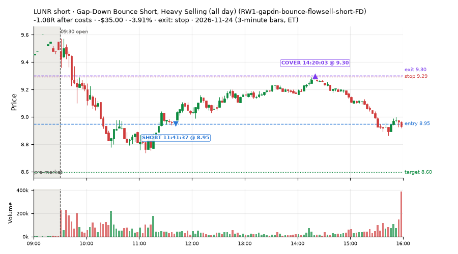
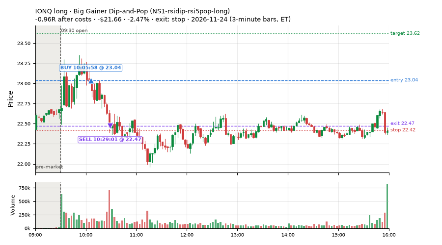
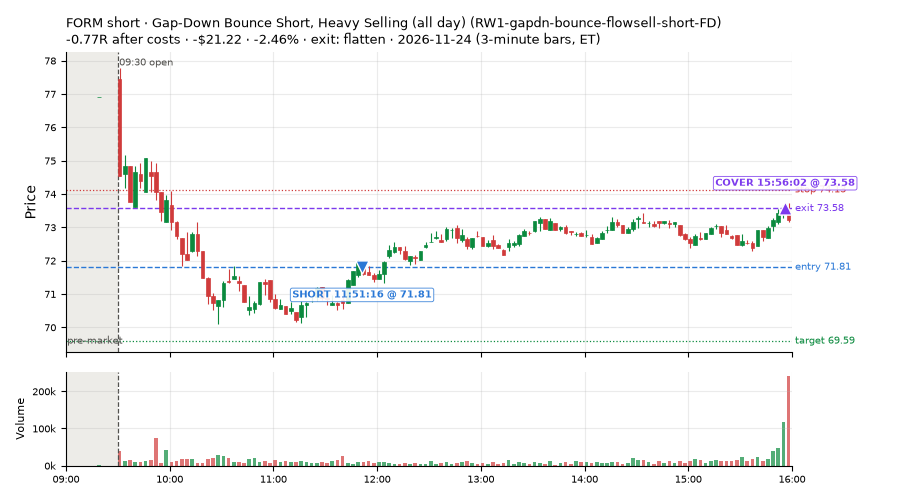

98 trades · win rate 61% · P/L $3.87
PROBATION: no live setup has passed both locked test periods. 10 owner-directed setups added 2026-10-08 (MarcoFlow top 5 + 5 new), untested live. RW6G1 (RW6 + VWAP band guard) added 2026-10-09, probation.

| Symbol | Setup | Side | In | Out | Entry | Exit | Exit reason | % gained | P/L |
|---|---|---|---|---|---|---|---|---|---|
| UVIX | Afternoon Higher-Low Long (near-miss) (NM-HL-T75-pm-long) | long | 13:12 | 13:56 | 54.13 | 55.55 | target | +2.62% | $22.72 |
| CBRS | Gap-Down Rebound Overbought Short (all day) (L3-gap-slope-rsi5hi-FD) | short | 13:40 | 15:55 | 90.25 | 88.54 | target | +1.89% | $15.36 |
| FIG | Gap-Down Bounce Short, Heavy Selling (all day) (RW1-gapdn-bounce-flowsell-short-FD) | short | 10:41 | 14:52 | 17.35 | 17.04 | target | +1.79% | $15.81 |
| Symbol | Setup | Side | In | Out | Entry | Exit | Exit reason | % lost | P/L |
|---|---|---|---|---|---|---|---|---|---|
| SHOE | CWT09-gapdn-vwaploss-g10-short | short | 10:47 | 12:27 | 11.08 | 11.67 | stop | -5.32% | $-47.20 |
| WULF | L3-gap-slope-rsi5hi-FD | short | 12:52 | 14:57 | 9.60 | 10.03 | stop | -4.48% | $-39.56 |
| LUNR | RW1-gapdn-bounce-flowsell-short-FD | short | 11:41 | 14:20 | 8.95 | 9.30 | stop | -3.91% | $-35.00 |
| IONQ | NS1-rsidip-rsi5pop-long | long | 10:05 | 10:29 | 23.04 | 22.47 | stop | -2.47% | $-21.66 |
| FORM | RW1-gapdn-bounce-flowsell-short-FD | short | 11:51 | 15:56 | 71.81 | 73.58 | flatten | -2.46% | $-21.22 |








Signal to fill: median 1s, 90th percentile 4s (98 trades). Bars close each minute; the order follows the bar close.
Best excursion (MFE): median 0.42R; worst (MAE) median 0.41R. 31% of trades never got +0.25R in our favour; 0 reached +1R and still closed at or below 0.
| Symbol | Setup | Best R | Worst R | Closed R |
|---|---|---|---|---|
| BX | RW1-gapdn-bounce-flowsell-short-FD | +0.66 | -1.02 | -1.16 |
| BAM | RW1-gapdn-bounce-flowsell-short-FD | +0.52 | -1.02 | -1.07 |
| AAPL | RW1-gapdn-bounce-flowsell-short-FD | +0.51 | -1.04 | -1.08 |
| UPRO | NS1-rsidip-rsi5pop-long | +0.40 | -1.13 | -1.14 |
| SPXL | NS1-rsidip-rsi5pop-long | +0.45 | -1.01 | -1.05 |
| Entry time | Trades | Win | Avg R | P/L |
|---|---|---|---|---|
| 09:50-10:30 | 6 | 33% | -0.28 | $-29.32 |
| 10:30-11:30 | 12 | 33% | -0.46 | $-74.75 |
| 11:30-13:00 | 52 | 58% | -0.08 | $-60.63 |
| 13:00-14:00 | 21 | 90% | +0.31 | $159.61 |
| 14:00-16:00 | 7 | 71% | -0.06 | $8.96 |
| Setup | Trades | Win | Avg R after costs | Adj R (net of SPY) | Avg R ex-market (all sessions) | P/L |
|---|---|---|---|---|---|---|
| Panic Flush Reversal (5x volume) (CWT05-flush-m05-v5-long) | 1.0 | 0% | -1.17 | -1.25 | -0.16 (beta +1.65, n 10) | $-8.97 |
| Gap-Down VWAP Loss Short (10% gap) (CWT09-gapdn-vwaploss-g10-short) | 1.0 | 0% | -1.07 | -0.96 | -0.18 (beta -0.14, n 10) | $-47.20 |
| Gap-Down Rebound Overbought Short (all day) (L3-gap-slope-rsi5hi-FD) | 46.0 | 76% | +0.13 | +0.05 | -0.00 (beta -0.71, n 146) | $189.74 |
| Early Sellers into a Pop (MF3-open-flowsell-rsi5hi) owner-directed; holdouts once: Sep-Oct -0.059R n170, Apr-Jun -0.034R n729 | 5.0 | 80% | +0.35 | +0.43 | -0.14 (beta -0.60, n 79) | $14.12 |
| Afternoon Higher-Low Long (near-miss) (NM-HL-T75-pm-long) | 3.0 | 67% | -0.02 | -0.05 | -0.14 (beta +0.66, n 19) | $9.51 |
| Big Gainer Dip-and-Pop (NS1-rsidip-rsi5pop-long) owner-directed; holdouts once: Sep-Oct +0.326R n10, Apr-Jun +0.056R n119 | 3.0 | 0% | -1.05 | -0.81 | -0.06 (beta +0.34, n 11) | $-41.18 |
| Gap-Down Bounce Short, Heavy Selling (all day) (RW1-gapdn-bounce-flowsell-short-FD) | 39.0 | 49% | -0.19 | -0.06 | -0.16 (beta -0.83, n 209) | $-112.15 |
Market direction (SPY, beta 1) accounted for $6.60 of today's $3.87; the rest ($-2.73) came from the setups themselves. Avg R net of SPY: -0.03 (incl. a hedge leg's cost; report only).
13 setups live today. Today: 258 signals, 98 taken, 0 lost because another setup held the symbol (0%). Since 2026-10-09 (33 sessions): 11685 signals, 4558 taken, 769 lost to other setups (7%). Peak open positions today 72 of 400 slots. Earnings blackout removed 124 symbols before scanning.
Simulated playing time (not live): 6784 what-if trades of signals not taken, avg -0.14R, 48% winners; of them 616 lost to another setup (avg +0.02R).
Silent: IDX1-qqq100-0955-TQQQ-trail, IDX1-qqq100-0955-TQQQ-hold, IDX2-spy075-0945-3x-trail, IDX3-spy075-0955-3x-trail, IDX5-spy050-0945-3x-trail · Crowded out: RW4-ns3-adv150-short-FD, RW4-ns3-adv150-short, NS3-failed-vwap-reclaim-short-FD · Starved: orb20_a, MF1-945-flowsell-vwapup, RW6G1-ns2-up3-vwap2sd-short, LIQ-pdl-sweep-open15-vwap-long, MF5-flowsell-vwapup-rsi5hi, ST5-pdbrkup-short-mid-t05s1-FD, ST3-rsi5up-short-pm-t1s1-FD, exhaustion_short-FD, NS2-sma50break-overbought-short, MF1-945-flowsell-vwapup-FD
| Prio | Setup | Today sig / taken | Sessions | Signals / taken / trades | Taken/day | Expected/day | Lost to other setups | Lost to (setup n) | Top skip reasons | SIMULATED: not-taken n / avg R / win | Verdict |
|---|---|---|---|---|---|---|---|---|---|---|---|
| 1 | Gap-Up Faller Volume Spike Short (all day) ST6-volspikeup-short-mid-t1s1-FD | 0 / 0 | 27 | 80 / 44 / 44 | 1.63 | 1.24 | 4 | RW4-ns3-adv150-short-FD 3, NS3-failed-vwap-reclaim-short 3, NS3-failed-vwap-reclaim-short-FD 1 | split-tape short gate 13, spread / quote / size 13, not shortable / shorts off 6 | 34 / -0.01R / 53% | slow 8.1 entries/week; ~7 weeks to 60 trades |
| 2 | Gap-Down Bounce Rejection Short (10% gap) CWT09-gapdn-bounce-g10-lowerhalf-short | 7 / 0 | 9 | 169 / 5 / 5 | 0.56 | – | 0 | – | not shortable / shorts off 153, spread / quote / size 5, other 4 | 163 / -0.45R / 26% | slow 2.8 entries/week; ~22 weeks to 60 trades |
| 3 | Panic Flush Reversal (5x volume) CWT05-flush-m05-v5-long | 3 / 1 | 9 | 23 / 10 / 10 | 1.11 | – | 1 | CWT09-gapdn-vwaploss-g10-short 1 | spread / quote / size 8, other 4, symbol held by another setup 1 | 13 / +0.24R / 85% | slow 5.6 entries/week; ~11 weeks to 60 trades |
| 4 | Gap-Down VWAP Loss Short (10% gap) CWT09-gapdn-vwaploss-g10-short | 11 / 1 | 9 | 172 / 10 / 10 | 1.11 | – | 0 | – | not shortable / shorts off 155, spread / quote / size 5, price through stop/target 2 | 161 / -0.64R / 17% | slow 5.6 entries/week; ~11 weeks to 60 trades |
| 5 | Early Sellers into a Pop MF3-open-flowsell-rsi5hi | 10 / 5 | 27 | 243 / 79 / 79 | 2.93 | 9.19 | 38 | MF3-open-flowsell-rsi5hi-FD 35, MF5-flowsell-vwapup-rsi5hi 13, MF5-flowsell-vwapup-rsi5hi-FD 7 | spread / quote / size 48, symbol held by another setup 38, split-tape short gate 38 | 164 / -0.12R / 49% | slow 14.6 entries/week; ~4 weeks to 60 trades |
| 6 | Afternoon Higher-Low Long (near-miss) NM-HL-T75-pm-long | 4 / 3 | 9 | 24 / 19 / 19 | 2.11 | – | 0 | – | spread / quote / size 5 | 5 / -0.25R / 20% | slow 10.6 entries/week; ~6 weeks to 60 trades |
| 7 | Big Gainer Dip-and-Pop NS1-rsidip-rsi5pop-long | 5 / 3 | 10 | 20 / 11 / 11 | 1.10 | 0.92 | 0 | – | spread / quote / size 5, price through stop/target 2, other 2 | 9 / +0.32R / 89% | slow 5.5 entries/week; ~11 weeks to 60 trades |
| 8 | Gap-Down Bounce-off-Low Fade (all day) L3-gap-slope-lowdist-FD | 4 / 0 | 32 | 551 / 113 / 113 | 3.53 | 9.76 | 9 | RW6-ns2-up3-short-FD 3, NS2-sma50break-overbought-short-FD 3, L3-gap-slope-rsi5hi-FD 3 | not shortable / shorts off 235, daily loss cap 72, spread / quote / size 51 | 429 / -0.09R / 49% | ok 17.7 entries/week |
| 9 | Gap-Down Rebound Overbought Short (all day) L3-gap-slope-rsi5hi-FD | 144 / 46 | 17 | 905 / 146 / 146 | 8.59 | 13.41 | 11 | L3-gap-slope-fromopen-FD 8, L3-gap-slope-lowdist-FD 4, RW6G1-ns2-up3-vwap2sd-short-FD 2 | not shortable / shorts off 454, daily loss cap 119, spread / quote / size 107 | 734 / -0.05R / 63% | ok 42.9 entries/week |
| 10 | 20-Minute Opening Range Breakout orb20_a | 1 / 0 | 32 | 117 / 40 / 40 | 1.25 | 6.79 | 0 | – | trigger missed between polls 33, spread / quote / size 18, other 12 | 70 / +0.06R / 51% | starved 1.25 entries/day vs ~6.79 expected |
| 11 | Gap-Down Bounce Short, Heavy Selling (all day) RW1-gapdn-bounce-flowsell-short-FD | 65 / 39 | 16 | 349 / 209 / 209 | 13.06 | 17.10 | 10 | RW3-gapdn-rsi5pop-flowsell-short-FD 5, MF2-open-rsimidhi-flowsell-FD 3, RW5-heat30-flowsell-rsi5pop-gapdn-short-FD 3 | spread / quote / size 66, other 42, not shortable / shorts off 21 | 138 / +0.10R / 58% | ok 65.3 entries/week |
| 12 | Big Loser Flush Buy NS5-sma50-flush-oversold-long | 2 / 0 | 5 | 26 / 20 / 20 | 4.00 | 2.41 | 0 | – | spread / quote / size 5, other 1 | 6 / +0.27R / 67% | ok 20.0 entries/week |
| 13 | RSI Collapse Dip Buy (all day) ST7-rsi50dn-long-pm-t1s1-FD | 2 / 0 | 12 | 24 / 19 / 19 | 1.58 | 2.17 | 1 | orb20_a 1 | other 3, symbol held by another setup 1, daily loss cap 1 | 5 / -0.27R / 40% | slow 7.9 entries/week; ~8 weeks to 60 trades |
Every trade is attached as a CSV you can open and edit in Excel or Google Sheets. Live page: https://misiti15.github.io/MCF/live/